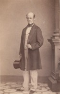

Beaubien-Perrault-Benington - Person Sheet
Beaubien-Perrault-Benington - Person Sheet

NameGeorge Okill Stuart1469
Birth12 Oct 1807, Toronto, Ontario9
Burial8 Mar 1884, St. Matthew’s Church, Québec, Québec
Occupationavocat, juge, maire, politicien44
FatherGeorge Okill Stuart (1776-1862)
MotherLucy Brooks (1775-1813)
Spouses
Birth1811
Death2 Jul 1893, Québec, Québec34
Burial4 Jul 1893, Holy Trinity Cathedral, Québec, Québec34
FatherUNKNOWN Stacey
No Children
Notes for George Okill Stuart
[DBC] Called to the Bar and practiced with his uncle, James Stuart, until the latter was named chief justice of Lower Canada in 1838. First English-speaking mayor of Québec in 1846. Independent Conservative MLA for Québec City in 1851, but overwhelmingly defeated in 1854 by Charles Alleyn. He contested the results, without success. Batonnier of the bar of Lower Canada 1851-3. QC in 1854. Admiralty Court judge 1873. Active in business, including Canada Fire Assurance Company and Québec Bank, St Maurice Railway and Navigation Company.
21 Né à Toronto le 12 octobre 1807, il était le fils du révérend George O’Kill Stuart et de Lucy Brooks. Il fut admis au barreau le 25 mai 1830. Il entra en société avec son oncle, sir James Stuart, qui avait une des études les plus populaires de Québec. Élu maire de Québec en 1846, M. Stuart fut réélu à ce poste de confiance, chaque année, jusqu'à 1850. L'année suivante, en 1851, il fut élu député de la cité de Qué bec à la Chambre d'Assemblée. Défait dans la même division en 1854, il fut réélu en 1857. A la fin de la même année, M. Stuart abandonna la politique pour se livrer exclusi vement à la pratique de sa profession. Le 27 octobre 1873, M. Stuart acceptait la charge de juge de la cour de Vice- Amirauté à Québec. Le juge Stuart décéda à Québec le 5 mars 1884. Il avait publié, en 1834, un recueil de décisions des tribunaux canadiens. En 1858 et en 1873, il avait également publié des recueils de décisions rendues par la cour de Vice-Amirauté de Québec.
22 Né à York (Toronto), le 12 octobre 1807, puis baptisé au même endroit, le 29 novembre, fils de George Okill Stuart, ministre de l'Église d'Angleterre
d'ascendance loyaliste, et de Lucy Brooks. Son prénom s'orthographia aussi O'Kill.
Étudia à Kingston, dans le Haut-Canada, puis à Québec où il fit aussi l'apprentissage du droit auprès de son oncle James Stuart, procureur général du Bas-Canada.
Admis au barreau en 1830.
Pratiqua sa profession à Québec, notamment à titre d'associé de son oncle, de 1834 à 1838, et dans la société Stuart and Murphy, de 1861 à 1873; se spécialisa
dans le droit maritime. Conseiller juridique de la ville de Québec de 1841 à 1843.
Représenta le quartier Saint-Louis au conseil municipal de Québec de 1843 à 1846 et fut maire de 1846 à 1850. Élu député de la cité de Québec en 1851; tory
indépendant. Défait en 1854. Élu dans la cité de Québec à une élection partielle le 14 avril 1857. Ne s'est pas représenté en 1858.
Bâtonnier du barreau de Québec de 1851 à 1853. Fait conseiller de la reine en 1854. Nommé temporairement, en septembre 1855, juge adjoint de la Cour
supérieure du Bas-Canada. En avril 1873, fut choisi comme adjoint de Henry Black, juge de la Cour de vice-amirauté de la cité de Québec et oncle de sa femme. À
la suite de la mort de celui-ci, obtint sa charge le 27 octobre 1873 et prêta serment le 2 janvier 1874; exerça ses fonctions jusqu'à sa mort.
Compila et fit paraître, à Québec, en 1834, Reports of cases argued and determined in the courts of King's Bench and in the provincial Court of Appeals of Lower
Canada, with a few more important cases in the Court of Vice Admiralty [...]; édita un recueil de jurisprudence en matière de droit maritime sur le Saint-Laurent
intitulé Cases selected from those heard and determined in the Vice-Admiralty Court at Quebec [...] (2 volumes, Londres, 1858 et 1875). Fit partie du conseil
d'administration de la Compagnie du chemin de fer et de la navigation du Saint-Maurice. Membre actif de l'Église d'Angleterre, fut délégué laïc au synode de
Québec, en 1863, et conseiller juridique honoraire de la Church Society, de 1873 à 1875.
Décédé à Québec, le 5 mars 1884, à l'âge de 76 ans et 4 mois.
Avait épousé dans la cathédrale anglicane Holy Trinity, à Québec, le 1er mai 1833, Margaret Black Stacey.
Neveu d'Andrew Stuart. Petit-fils de John Brooks, gouverneur de l'État du Massachusetts.
21 Né à Toronto le 12 octobre 1807, il était le fils du révérend George O’Kill Stuart et de Lucy Brooks. Il fut admis au barreau le 25 mai 1830. Il entra en société avec son oncle, sir James Stuart, qui avait une des études les plus populaires de Québec. Élu maire de Québec en 1846, M. Stuart fut réélu à ce poste de confiance, chaque année, jusqu'à 1850. L'année suivante, en 1851, il fut élu député de la cité de Qué bec à la Chambre d'Assemblée. Défait dans la même division en 1854, il fut réélu en 1857. A la fin de la même année, M. Stuart abandonna la politique pour se livrer exclusi vement à la pratique de sa profession. Le 27 octobre 1873, M. Stuart acceptait la charge de juge de la cour de Vice- Amirauté à Québec. Le juge Stuart décéda à Québec le 5 mars 1884. Il avait publié, en 1834, un recueil de décisions des tribunaux canadiens. En 1858 et en 1873, il avait également publié des recueils de décisions rendues par la cour de Vice-Amirauté de Québec.
22 Né à York (Toronto), le 12 octobre 1807, puis baptisé au même endroit, le 29 novembre, fils de George Okill Stuart, ministre de l'Église d'Angleterre
d'ascendance loyaliste, et de Lucy Brooks. Son prénom s'orthographia aussi O'Kill.
Étudia à Kingston, dans le Haut-Canada, puis à Québec où il fit aussi l'apprentissage du droit auprès de son oncle James Stuart, procureur général du Bas-Canada.
Admis au barreau en 1830.
Pratiqua sa profession à Québec, notamment à titre d'associé de son oncle, de 1834 à 1838, et dans la société Stuart and Murphy, de 1861 à 1873; se spécialisa
dans le droit maritime. Conseiller juridique de la ville de Québec de 1841 à 1843.
Représenta le quartier Saint-Louis au conseil municipal de Québec de 1843 à 1846 et fut maire de 1846 à 1850. Élu député de la cité de Québec en 1851; tory
indépendant. Défait en 1854. Élu dans la cité de Québec à une élection partielle le 14 avril 1857. Ne s'est pas représenté en 1858.
Bâtonnier du barreau de Québec de 1851 à 1853. Fait conseiller de la reine en 1854. Nommé temporairement, en septembre 1855, juge adjoint de la Cour
supérieure du Bas-Canada. En avril 1873, fut choisi comme adjoint de Henry Black, juge de la Cour de vice-amirauté de la cité de Québec et oncle de sa femme. À
la suite de la mort de celui-ci, obtint sa charge le 27 octobre 1873 et prêta serment le 2 janvier 1874; exerça ses fonctions jusqu'à sa mort.
Compila et fit paraître, à Québec, en 1834, Reports of cases argued and determined in the courts of King's Bench and in the provincial Court of Appeals of Lower
Canada, with a few more important cases in the Court of Vice Admiralty [...]; édita un recueil de jurisprudence en matière de droit maritime sur le Saint-Laurent
intitulé Cases selected from those heard and determined in the Vice-Admiralty Court at Quebec [...] (2 volumes, Londres, 1858 et 1875). Fit partie du conseil
d'administration de la Compagnie du chemin de fer et de la navigation du Saint-Maurice. Membre actif de l'Église d'Angleterre, fut délégué laïc au synode de
Québec, en 1863, et conseiller juridique honoraire de la Church Society, de 1873 à 1875.
Décédé à Québec, le 5 mars 1884, à l'âge de 76 ans et 4 mois.
Avait épousé dans la cathédrale anglicane Holy Trinity, à Québec, le 1er mai 1833, Margaret Black Stacey.
Neveu d'Andrew Stuart. Petit-fils de John Brooks, gouverneur de l'État du Massachusetts.